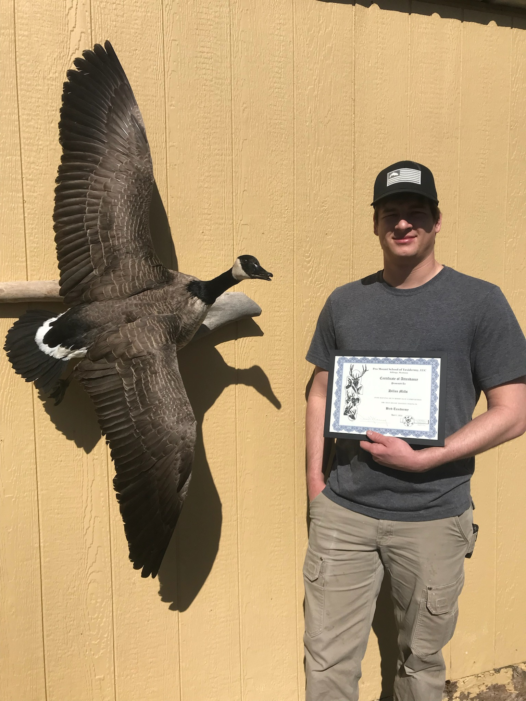

My interest for taxidermy started at a young age. At 13, I started my journey by learning
how to tan small animals like rabbits. As I got older and deeper into hunting, I wanted to get birds
mounted to put on my wall.
Being so young at the time, I was not able to pay to have them done for me, so this is where I started
dabbling with bird taxidermy. I watched countless youtube videos on the subject. As you can imagine,
my first ones were pretty rough. My family told me they looked like Daffy duck.
When I graduated highschool I strayed away from taxidermy only to be sucked right back in a few
months later. This is when I knew I wanted to do this not only for a hobby but for a job. From there
I attended
Pro Mount School of taxidermy in Billings, Montana. This is where I fine tuned my bird mounting
skills and also learned how to mount fish and big game mammals.
After 4 months of being in Billings, my schooling was done and I was ready to start mounting animals
for people whom were not myself. My business journey began slow but picked up very fast.
Today I aim to make every mount more realistic than the last and to make your trophy
last a lifetime.